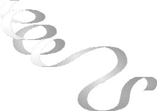

| Poèmes |
Los Angeles, États-Unis (écrit à Phnom Penh, Cambodge) |

De Vos yeux,
Le courant de lumière
Adoucit les émotions de
souffrances.
Un regard indulgent
Fait fondre les glaciers du cœur.
Leur éclat cristallin
Purifie le cerveau confus.
Eblouissant comme l'éclair,
Il illumine les coins les
plus terribles,
Et rapide comme un sabre,
Fait voler en éclat
la décrépitude millénaire.
Par Votre regard divin,
Le plus pauvre maintenant
Obtient le monde entier.
Quand vous me regardez, oh !
Le temps n'existe plus !
Dans le nirvana
je me projette,
immergée dans une extase extrême
Que l'univers
ne peut contenir !